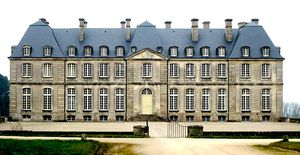
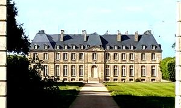
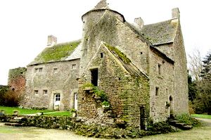
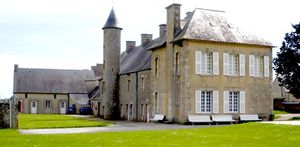

Recensement Jean-Claude Truffet
| Département | 50 — Manche |
| Canton | Val-de-Saire |
| Commune | Saint-Pierre l |
| Type d'édifice | Manoir-Château |
| Période d'origine | XVI-XIX |
| Coordonnées GPS | 49° 39' 21" Nord, 1° 22' 16" Ouest Imbranville GPS : 49° 41' 10" Nord, 1° 17' 01" Ouest |




Trois châteaux à St-Pierre l'Eglise dont celui de St-Pierre, de Fontenay et celui d'Imbranville. ST PIERRE L'EGLISE, au début du XVIe siècle, les Clamorgan possédaient une "forte maison" à pont-levis à l'emplacement de la pièce d'eau près de l'église. Vendue en 1566 au sieur Richard Castel de Rauville, sa descendance eut à affronter, pendant la dernière Guerre de Religion, Jean De Raffoville, seigneur de Denneville et ardent bagarreur. La maison-forte fut incendiée et l'incendiaire fut condamné par le Parlement de Normandie à verser 6000 écus, qui permirent de construire un manoir à l'emplacement des actuels communs du château. Erigé en baronnie par Anne d'Autriche en 1644, le domaine vit naître Charles-Irénée Castel, abbé de Saint Pierre Eglise. Le château actuel est élevé au milieu du XVIIIe siècle sur un sous-sol vouté et comprend un rez-de-chaussée éclairé par de hautes baies vitrées séparé de son étage par un long linéament de pierre. Le corps de logis, légèrement saillant et surmonté d'un fronton sculpté, est bordé par deux pavillons. Ce vaste bâtiment d'habitation est entouré d'un parc de 56 ha planté de hêtres et ceint de hauts murs. Le domaine est une propriété privée. Mme Chantal de Blangy, Éléments protégés MH : le château : inscription par arrêté du 6 janvier 1930. Le portail d'entrée ; les façades et les toitures des deux pavillons d'entrée ; inscription par arrêté du 28 septembre 1970. FONTENAY à Clitourps à quelques K.M. au sud-Est. La construction du Manoir de Fontenay date du XVIe au XVIIe siècle. Ce manoir est représentatif des manoirs fortifiés du XVIe siècle en Val de Saire. Le Manoir de Fontenay est inscrit partiellement aux M.H.
IMBRANVILLE à la pointe de Barfleur à Gatteville le Phare, date de 1853. est devenu une colonie de vacances. La légende raconte : en 1720 très exactement, qu'une belle marquise avait un fils à marier. La Marquise d'Aigneaux lui fit rencontrer tous les plus beaux partis de la région. Hélàs, le jeune marquis restait de glace. Aucune des demoiselles que lui présentait sa chère mère ne trouvait grâce à ses yeux. Par un beau mois de juillet le jeune et beau Marquis d'Aigneaux s'éclipse pour les vacances dans un petit manoir que sa mère avait fait construire dans le Val de Saire, prés du petit village de Gatteville-Phare. Un beau jour, ou était-ce une nuit, peut-être à l'heure où blanchit la campagne, notre jeune garçon se retrouva soudainement face à face avec la plus délicieuse des jeunes filles, une jeune roturière. Et cest là que lhistoire rejoint les légendes de Tristan et Iseult ou de Roméo et Juliette. En effet, sa mère ne pouvant se résoudre à ce que son fils épouse une roturière, fit tout ce qui était possible pour séparer les amoureux. Alors, de colère, la marquise d'Aigneaux, renia son fils, le déshérita et le bannit de ses terres. Aigrie et ridée par les aléas de la vie, elle fit don du manoir au Roi. Mais son fils ne pouvait le supporter. Dans la défiance quil manifestait à sa mère, il lui devenait indispensable de le racheter. Ce quil fit au prix fort ! Mais il en fut ruiné ! Le manoir va traverser ensuite les siècles sans encombres, épousant les soubresauts de lHistoire de France et devenir la magnifique propriété que l'on connaît aujourd'hui! En 1952, il était dans un bien piètre état lorsque la ville d'Equeurdreville, à la recherche d'un lieu pour organiser des colonies de vacances pour les enfants, décide de lacheter.
Seigneurs locaux
"
Trois châteaux à St-Pierre l'Eglise dont celui de St-Pierre grav-1-2, de Fontenay grav -3 et celui d'Imbranville grav-4. Fontenay GPS : 49° 39' 21" Nord, 1° 22' 16" Ouest Imbranville GPS : 49° 41' 10" Nord, 1° 17' 01" Ouest